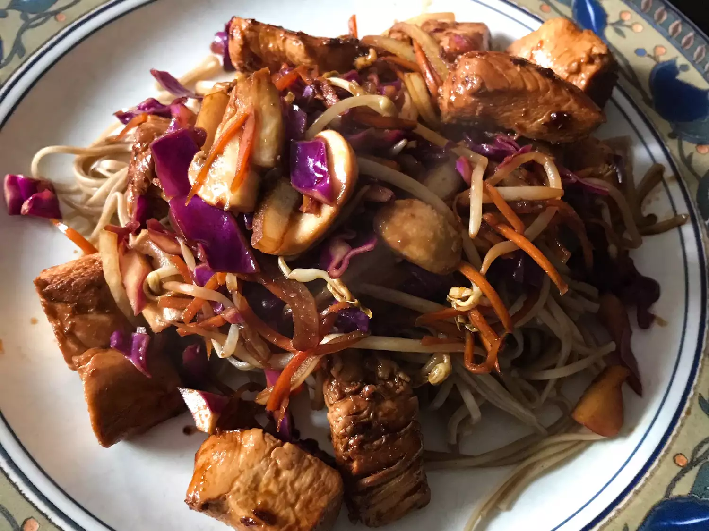

Yakisoba Chicken

Yakisoba chicken sered, ready to eat!
This sesame-seared tuna is an easy, great-tasting dish. Fresh tuna steaks are coated with sesame seeds, then quickly seared and served rare, so be sure to use good quality fresh tuna.
Ingredients
- ¼ cup soy sauce
- 2 tablespoons sesame oil
- 1 tablespoon mirin (Japanese sweet wine)
- 1 tablespoon honey
- 1 tablespoon rice wine vinegar
- ½ cup sesame seeds
- 4 (6 ounce) tuna steaks
- 1 tablespoon olive oil
- wasabi paste